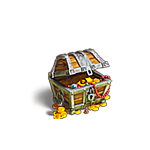

Получено: файл; исходный URL. Скачано без перекодирования с зеркала; побайтовое соответствие файлу исходного хоста не проверено. Страница: источник.


Сундук Мертвеца
Историческая браузерная игра; сеть и версия не установлены- Тип
- Пиратское сокровище
- Покупка
- нет данных
- Продажа
- нет данных
- Как получить
- Пиратские острова; сведения исторических источников см. ниже.
- Применение
- Открывается на острове; награды зависели от очерёдности и редакции.
- Особенности
- 70 дублонов за первое открытие согласно двум фанатским источникам; это не награда за изгнание Сильвера.
- Версия и дата
- Историческая браузерная игра; сеть и версия не установлены
Данные по источнику · браузерная игра; сеть не указана · 30.10.2013 — дата URL; позднее редактирование подтверждается новостью о награде от 22.11.2013
Предварительно: Фанатские страницы одного сайта, не независимые между собой.. Требуется сверка.
- Получение
- Источник указывает Остров Сокровищ, Жуткий и Таинственный острова; предмет открывается на острове, купить и подарить нельзя.
- Награда
- Первооткрывателю — 70 дублонов и дополнительные предметы; второму и третьему автор обещает некоторое количество дублонов, не называя числа. Вероятности дополнительных предметов не указаны.
- Хронология
- Новость 22.11.2013 описывает увеличение с 50 до 70. Следовательно, дату URL 30.10 нельзя использовать как доказательство, что число 70 существовало в первоначальной редакции статьи.
Данные по источнику · браузерная игра; соцсеть не указана · 23.03.2015; дата поздней редакции неизвестна
Предварительно: Фанатский источник; независимость от Zombie-island не доказана.. Требуется сверка.
- Содержимое
- За первое открытие автор называет 70 дублонов и уникальные предметы; перечисляет те же три пиратских острова.
- Оговорка
- Эта награда относится к Сундуку Мертвеца, а не к одному изгнанному Сильверу.
Связанные сущности
- Остров Сокровищ — остров по источнику
- Жуткий остров — остров по источнику
- Таинственный остров — остров по источнику